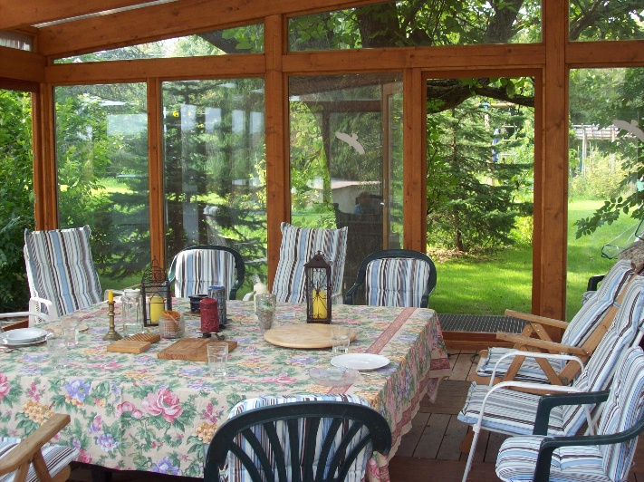
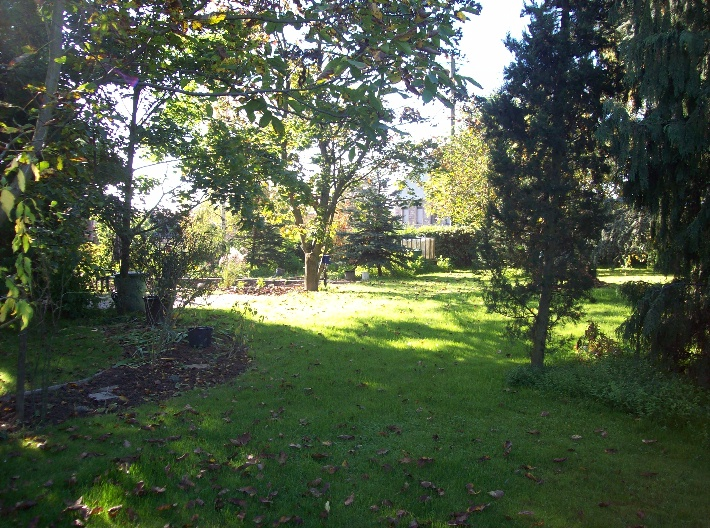

Hier eintragen in den Newsletter von perlenschnur.org/viva-vortex.de
Home
Ein Ort der Begegnung für freien Gedankenaustausch
|
Mein verstorbener Mann, mit einer Wassermann-Sonne nach der Europäischen Astrologie und einem Wassermann-Aszendent in der Vedischen Astrologie, war ein absoluter Vorreiter und Vordenker, sowohl was Technologie, als auch Spiritualität und die Entwicklung der gesamten Menschheit anbelangt, und seiner Zeit in vieler Hinsicht weit voraus.
|
|

|
Sein großer Garten, samt großem Wintergarten, soll nun, ihm zu Ehren, zu einem Ort der Begegnung werden, zu einem Ort der Begegnung für Menschen, die wie er Vordenker, Freidenker, Avantgardisten und Individualisten sind.
Hier sollen sich Menschen an bestimmten Tagen ohne vorgegebenes Thema, ohne enge zeitliche Einschränkung und in einem privaten Rahmen
|
über ihr eigenes Weltbild, eigene Ideen und Visionen und essentielle Lebensfragen austauschen können. Dies betrifft philosophische bzw. geisteswissenschaftliche Themen, naturwissenschaftliche Themen, gesundheitliche und psychologische Themen, spirituelle Themen und alles andere, was für einen selbst wichtig und wertvoll ist.
Wer sich ein wenig orientieren will, worum es gehen könnte, kann dazu einerseits auf dieser Website das finden, womit ich mich selbst schon beschäftigt habe, oder auf der Website unseres Vereins Perlenschnur e.V. eine Fülle von Themen, Videos und weiterführende Links finden. Zusätzliche Themen sind natürlich ebenfalls willkommen.
Die wichtigsten Bedingungen für die Nutzung dieses "Ortes der Begegnung" sind Achtung und Respekt jedem anderen Teilnehmer gegenüber, Toleranz gegenüber der Meinung und dem Weltbild der Anderen, eine faire Gesprächsführung in der Weise, dass jedem die Gelegenheit und Zeit für eigene Redebeiträge eingeräumt wird und der Verzicht darauf, die anderen Teilnehmer von der eigenen Meinung überzeugen zu wollen.
|
|
Gibt es jemanden, der ein Thema anspricht, das auf großes Interesse bei vielen Anderen stößt, und möchte er dieses Thema ausführlicher und strukturiert vor einer Interessentengruppe vortragen, so können wir dafür einen gesonderten Vortragstermin vereinbaren. Zu einem solchen Termin werden dann das Thema und der Referent sowie der Ort vorher bekannt gegeben, allenfalls auch ein dafür zu entrichtender Teilnahmebeitrag.
|

|
Je nach Thema wird dafür der Verein Perlenschnur e.V. als Veranstalter auftreten, oder der Referent selbst.
Die Teilnahme an den Gesprächen an den Tagen, wo unser Garten/Wintergarten zum „Ort der Begegnung“ wird, ist grundsätzlich gebührenfrei.
Zur Deckung meiner Fixkosten (für Strom, Wasser, Reinigung, Pflege, Wartung und Instandhaltung) bitte ich alle, denen es finanziell möglich ist, um eine freiwillige Spende, die anonym abgegeben werden kann. Da die Natur und unser Mensch-Sein auf dem Prinzip von Geben und Nehmen aufgebaut ist (auf Einatmen und Ausatmen, auf Ebbe und Flut, auf Wachstum und Degeneration, auf Rhythmen und Zyklen unterschiedlichster Art und Form) bitte ich jene, denen ein finanzieller Ausgleich nicht möglich ist, einen Arbeitsbeitrag bei der Vorbereitung, der Reinigung und/oder der Gartenpflege zu leisten.
Jeder, der kommt, möge etwas zu essen und trinken fürs gemeinsame Buffet mitbringen (in der Regel reicht es, ein wenig mehr mitzubringen, als man selbst über den Tag hinweg essen würde), dann haben wir erfahrungsgemäß ein ausreichendes und buntes Buffet, wo alle satt werden. Dabei bitte bedenken, dass es mittlerweile sehr viele Vegetarier und Veganer gibt und auch Alkohol immer weniger gefragt ist. Der Platz im Kühlschrank ist ebenfalls begrenzt, bitte auch das bei der Wahl der mitgebrachten Speisen und Getränke bedenken. In unserem Wintergarten, und auch im Haus, ist Nichtraucherzone. Hunde und Katzen dürfen bei uns auch nicht ins Haus. Wer ein Tier mitbringen möchte, muss es bitte vorher mit mir besprechen. Kinder jeden Alters können mitgebracht werden, wenn jemand mitkommt, der sich um die Kinder kümmert und sie beaufsichtigt.
In der warmen Jahreszeit ist es möglich im Garten zu zelten oder im Wintergarten auf Matratzen oder Isomatten zu übernachten. Da die Plätze dafür begrenzt sind, ist dies nur in der Reihenfolge der Anmeldung möglich. In unserem Ort und den Nachbarorten gibt es aber auch ausreichend Übernachtungsmöglichkeiten in Hotels, Pensionen und Privatquartieren.
Ich werde die Termine für die Öffnung des „Ortes der Begegnung“ jeweils hier und/oder auf der Website des Vereins Perlenschnur e.V. www.perlenschnur.org bekannt geben.
In der Regel werde ich dafür ein ganzes Wochenende vorsehen. Ich öffne die Türen an den genannten Terminen jeweils am Samstag um 8 Uhr morgens bis Sonntag um ca. 21 Uhr, sofern beim jeweiligen Termin nicht etwas Anderes angegeben ist.
Für die von weiter her Anreisenden, die im Garten zelten oder im Wintergarten nächtigen wollen, ist die Ankunft auch schon am Freitag davor möglich, diese muss aber zeitlich mit mir abgestimmt werden. Desgleichen ein eventuell längerer Aufenthalt.
Die Anreise kann mit dem Auto erfolgen (über die A61, Ausfahrt Gau-Bickelheim) oder über die Bahn (nach Bad Kreuznach und von dort mit dem Bus 226 – Bus-Fahrplan vorher beachten, nicht regelmäßig).
Wer zu diesen Tagen des Kennenlernens und des Gedanken- und Meinungsaustausches am „Ort der Begegnung“ kommen will, schreibt mit bitte formlos eine E-Mail entweder an ingridschroeder@gmx.net oder an office@perlenschnur.org unter Angabe wie viele Personen kommen, zu welchem Termin, an beiden oder nur einem Tag, zum Zelten im Garten oder zur Übernachtung im Wintergarten und allenfalls, ob die Anreise schon am Freitag nötig wäre. Für allfällige Kontaktaufnahme wäre eine Telefonnummer auch sinnvoll.
Denn ich behalte mir jedenfalls vor, die Treffen abzusagen, wenn sich entweder niemand oder nur 1 Person angemeldet hat oder meinerseits etwas dazwischen kommt.
Wenn es noch Fragen gibt, bitte um eine kurze Mail oder einfach anrufen (siehe Impressum).
Anschrift: Schröder, Ziegelhüttenstr. 14, 55597 Wöllstein
Die aktuellen Termine für die Öffnung des „Ortes der Begegnung“ sind:
22./23. Juni 2024
Bitte vor Anmeldung prüfen, ob sich die Termine inzwischen geändert haben oder ob ein Termin ausfällt (weil z.B. wegen Krankheit oder mangelnder Teilnehmerzahl abgesagt)!
Ich freue mich auf einen fruchtbaren Gedankenaustausch und fröhliche, wie ernsthafte gemeinsame Stunden.
Ihre/Eure Ingrid Schröder
|
Home
| Termine
| Videos
| Links
| Doku
| UeberUns
| Impressum
| Datenschutz
| Sitemap
|